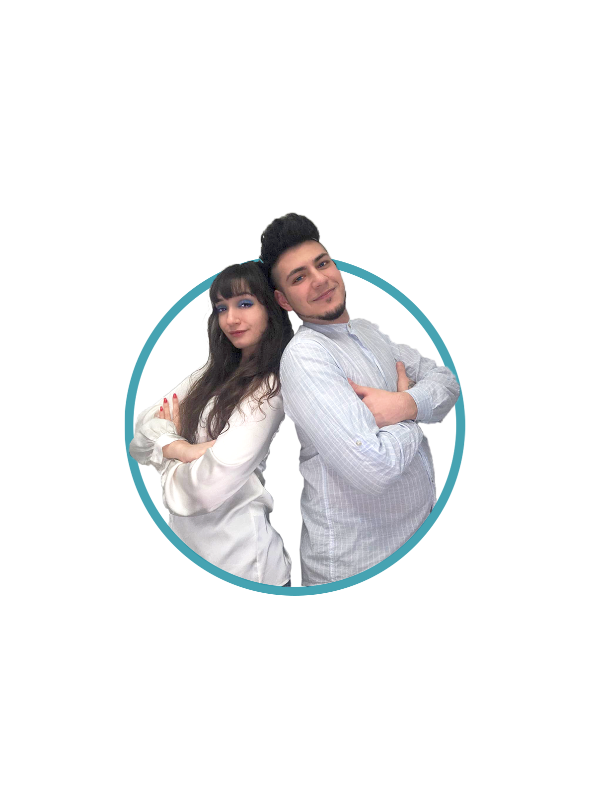
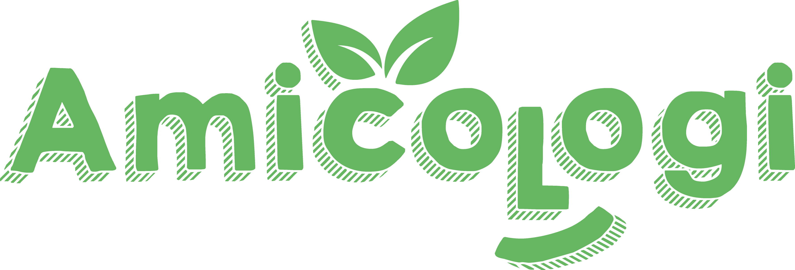
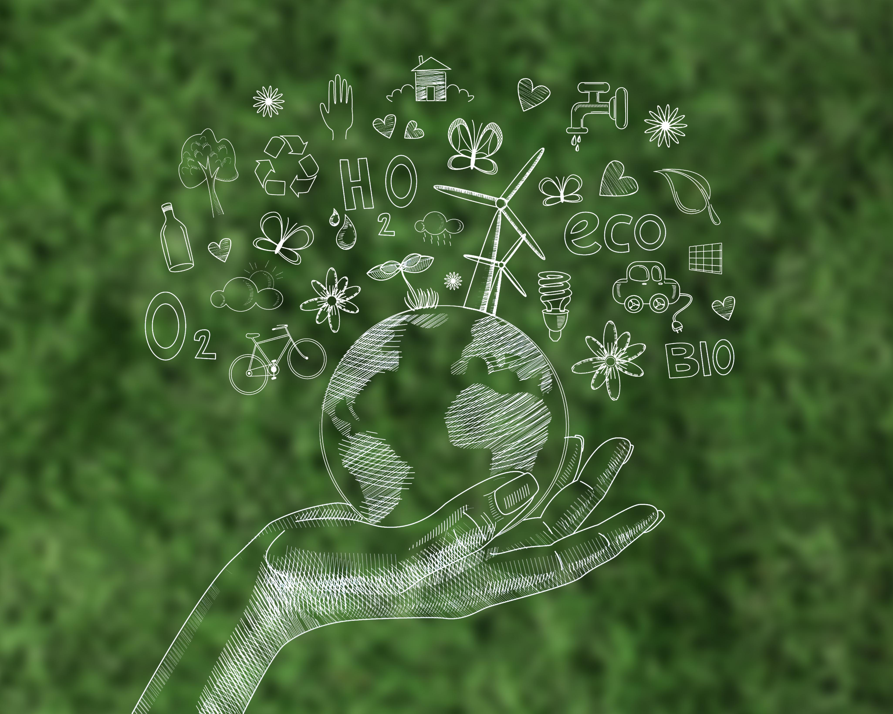

Abbiamo scelto di mettere il nostro tempo a disposizione di chi ha bisogno di un orecchio attento o di una mano tesa.
Il nostro progetto nasce dal desiderio di riportare l'attenzione sull'essere umano, indipendentemente dall'età o dalla situazione.
Scopri di piùMi chiamo Sabrina, studio Psicologia e credo che il benessere mentale passi anche attraverso la qualità delle nostre relazioni quotidiane. Spesso, ciò di cui abbiamo più bisogno non è una diagnosi, ma una persona preparata che sappia ascoltarci senza giudizio e che ci faccia sentire meno soli.
Insieme al mio compagno Daniele abbiamo deciso di mettere i miei studi e la nostra sensibilità al servizio di chi sta attraversando un momento di stanchezza, solitudine o stress. Non sono una psicoterapeuta, ma una facilitatrice di benessere.
Nota di trasparenza: Il nostro servizio è un supporto di tipo relazionale e di ascolto. Non si sostituisce a percorsi psicoterapeutici o psichiatrici clinici. Se identificherò bisogni che richiedono l'intervento di un professionista iscritto all'Albo, sarà mia premura consigliarti di rivolgerti a una figura specializzata.

Un tempo dedicato solo a te, per parlare di ciò che ti preme, in totale riservatezza, dove vuoi tu!
Abbiamo scelto di offrire uno spazio unico e protetto: la nostra Dimora. In un ambiente familiare e riservato, potrai trovare un luogo privo di giudizio dove sentirti liber* di esprimerti pienamente.
Perché a casa nostra? Perché la vicinanza e l'accoglienza sono la base del supporto emotivo che offriamo, un valore aggiunto al percorso che faremo
Affrontare insieme piccole sfide quotidiane che da soli sembrano montagne (andare a una visita, sbrigare una pratica, fare una passeggiata).
Un confronto tra pari per chi vive l'ansia da prestazione o il senso di isolamento.
Un accompagnamento nelle sue attività quotidiane, offrendo ascolto e compagnia attenta, partecipe e rassicurante.
Per essere vicini anche da lontani. Offriamo supporto anche in videochiamata dalla piattaforma dove sei più comodo tu!
Cerchiamo storie
Stiamo cercando storie di chi ha saputo trasformare il vuoto in sostanza. Cerchiamo chi, come noi, ha vissuto l'assenza e il caos e ne ha estratto l'astuzia necessaria per comandare il proprio presente.
Vuoi dire la tua? Non ti chiediamo di sfogarti. Ti chiediamo di raccontarci come hai vinto. Le mini interviste di Amicologi servono a questo: smontare la battaglia per mostrare a tutti il metallo prezioso che ne è uscito fuori.
SCRIVICI per partecipare.
La tua storia resterà anonima. La tua forza, invece, diventerà una lezione per molti.

insieme:
- Liberiamo strade e parchi dai rifiuti.
- Pulizia di muri e decoro urbano.
- Piccoli interventi per rendere ogni angolo più vivo.
Unirti ora significa:
- Costruire il progetto da zero insieme a noi.
- Portare le tue idee e decidere quali zone della città salvare per prime.
- Creare una community di persone che non si lamentano, ma agiscono.
CHI CERCHIAMO?
- Operativi: chi ha voglia di sporcarsi le mani.
- Creativi: chi sa come rendere bello un angolo grigio.
- Organizzatori: chi ci aiuta a coordinare le azioni.

Il tuo aiuto è fondamentale per permetterci di continuare a offrire supporto accessibile a tutti.
Ogni contributo, anche piccolo, fa la differenza.